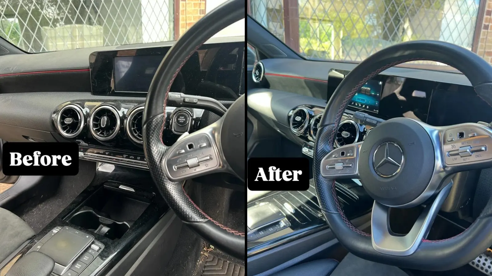
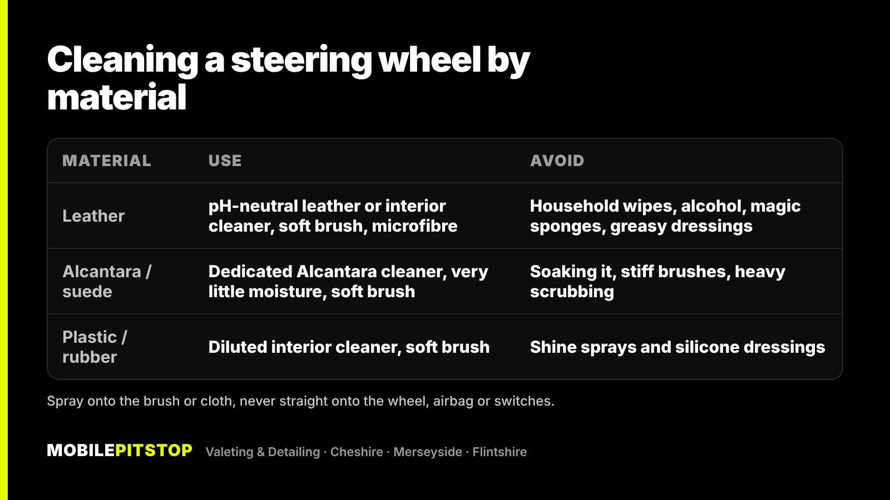
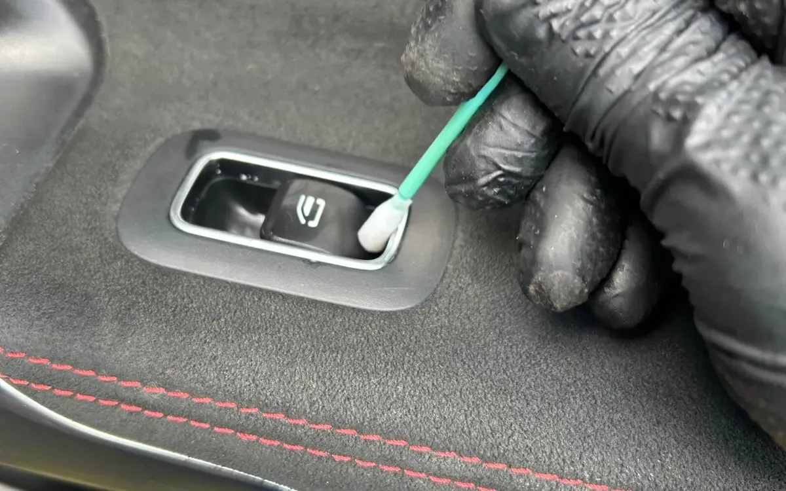
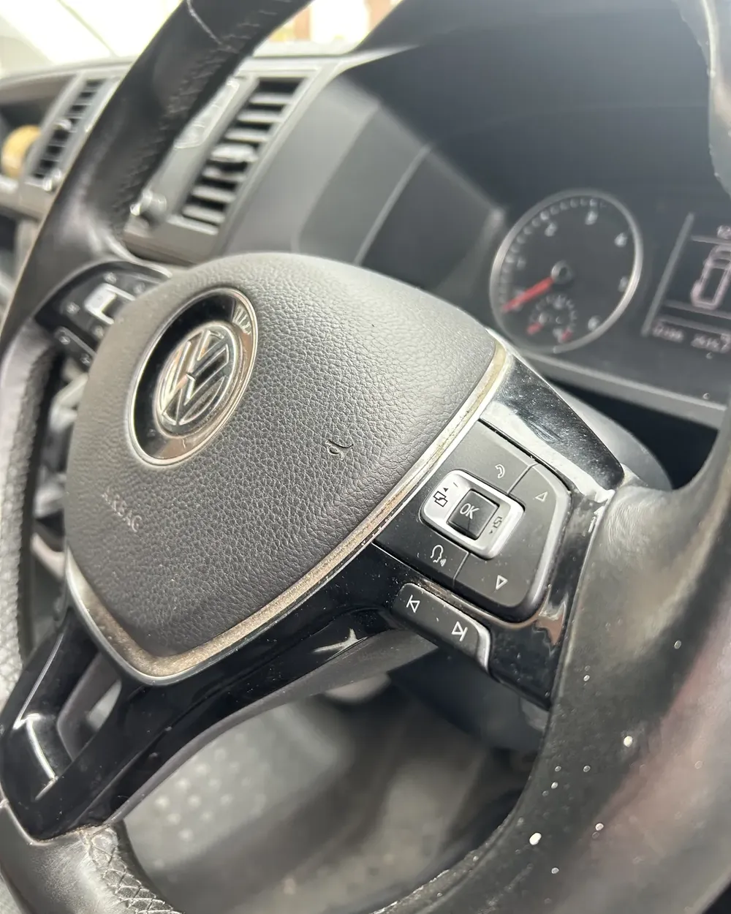

To clean a steering wheel properly, spray a gentle, pH-neutral interior or leather cleaner onto a soft brush or microfibre cloth, work it into the rim a section at a time, then wipe the grime away with a clean, slightly damp microfibre and dry it. Never spray straight onto the wheel, and keep moisture away from the airbag cover and switches.
What you use depends on what the wheel is made of. Leather, Alcantara and plastic each need a slightly different approach, and the most common mistakes, like household wipes, magic sponges and shiny dressings, do more harm than the dirt.
Below is why steering wheels get so grimy, how to clean each type at home, and what we do on our jobs.
Your hands are on the wheel every time you drive. They leave behind skin oils, sweat, hand cream, sanitiser residue and whatever was on them before you got in: food, fuel from the pump, dirt from the garden. Over months, that builds up into a film that sits in the grain of the leather and the stitching.
You can usually tell by the shine. A leather wheel that looks glossy, especially at ten-to-two where your hands sit, isn't polished. It's coated in grime. Clean leather on most modern cars has a soft, satin look. On Alcantara and suede-style wheels, the same oils flatten the fibres, so the rim goes dark, matted and slightly slippery.
It matters for more than looks. A greasy rim is less grippy, and grime left on leather for a long time speeds up wear on its protective top layer.

This is the safe routine for most wheels. Always read the label of whichever product you use, and try it on a small, hidden area first.
If the cloth is still coming away dirty, repeat on that section rather than scrubbing harder.

Most leather steering wheels on modern cars have a protective coloured coating on top. That's the layer you're cleaning, and the one you want to avoid wearing through. A pH-neutral leather or interior cleaner and a soft brush are all it needs.
Leather conditioner is less useful on a wheel than people think. Coated leather doesn't soak much up, and anything greasy left on the rim makes it slippery in your hands. If you want to make future cleans easier, a dedicated leather protection product is a better choice than a heavy conditioner.
These are the most delicate. Use a cleaner made for Alcantara, very little moisture, and a soft brush. Lightly dampen the cloth or brush, clean a small area, blot it, and let it dry fully. Once dry, brush the fibres gently in one direction to lift them. Soaking it or scrubbing hard can leave the surface patchy or bobbled.
The easiest to clean. A diluted interior cleaner on a soft brush, then a wipe and dry, is enough. Skip the shiny dashboard sprays: a glossy wheel is a slippery wheel, and silicone dressings can leave your hands greasy too.
The steering wheel is part of every Interior Deep Clean, not an afterthought. On a typical job:

If the leather is in good condition and you'd like it to stay that way, a leather coating can be added to an Interior Deep Clean, and a leather ceramic coating is available as an add-on to a Protection Detail. Both make the next clean easier.
If the whole car needs a reset, inside and out, the In & Out Deep Clean includes everything in the Interior Deep Clean as well as the exterior. It's also worth knowing that in a smoker's car, a yellow film on the wheel is part of the smell problem, which our guide to getting rid of cigarette smell in a car covers.
Cleaning removes grime. It can't put back leather that's already worn. Look closely at the rim in daylight:

A clean will still make a worn wheel feel and look better, but if the coating has gone through, the fix is a re-colour or re-trim from a specialist. If you're not sure which you've got, send us a few photos in daylight and we'll tell you straight which service the car needs, including when a cheaper one will do.